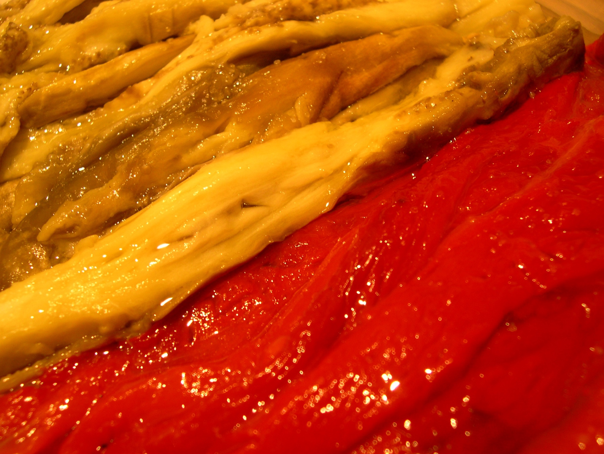
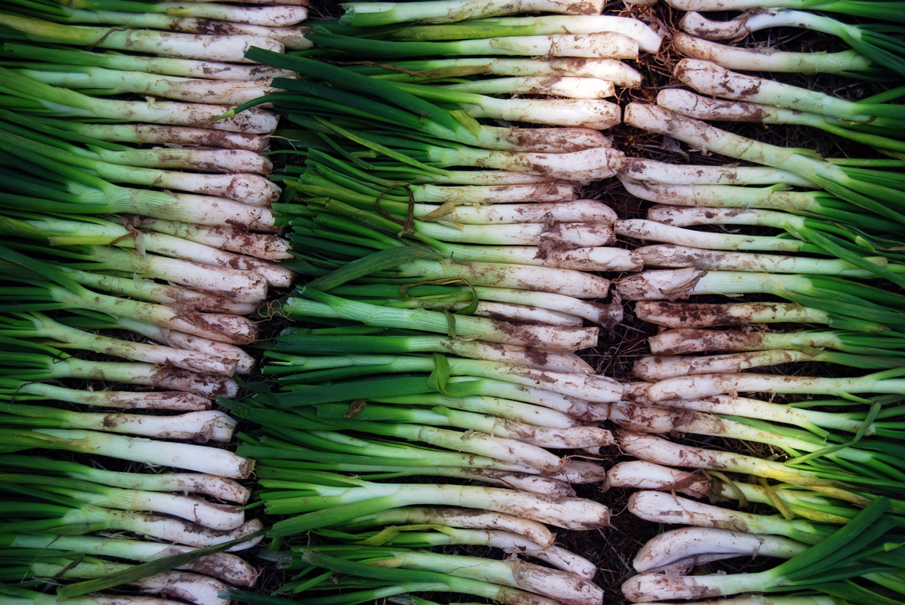

Fideuà
Fideus torrats i cuits en un bon fumet de peix, amb sípia i gambes, i servits amb allioli.
Fideus torrats i cuits en un bon fumet de peix, amb sípia i gambes, i servits amb allioli.

Crema d'ous perfumada amb canyella i llimona, coronada amb sucre cremat.

Albergínia, pebrot i ceba escalivats a la brasa i amanits amb oli d'oliva.

La calçotada de tota la vida: calçots a la flama i salsa de fruits secs per sucar.